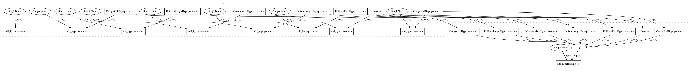

8565a366de87d82dc19c3386b4a83359be1aa275,autosklearn/pipeline/components/classification/random_forest.py,RandomForest,get_hyperparameter_search_space,#Any#,124
Before Change
@staticmethod
def get_hyperparameter_search_space(dataset_properties=None):
cs = ConfigurationSpace()
cs.add_hyperparameter(Constant("n_estimators", 100))
cs.add_hyperparameter(CategoricalHyperparameter(
"criterion", ["gini", "entropy"], default="gini"))
cs.add_hyperparameter(UniformFloatHyperparameter(
"max_features", 0.5, 5, default=1))
cs.add_hyperparameter(UnParametrizedHyperparameter("max_depth", "None"))
cs.add_hyperparameter(UniformIntegerHyperparameter(
"min_samples_split", 2, 20, default=2))
cs.add_hyperparameter(UniformIntegerHyperparameter(
"min_samples_leaf", 1, 20, default=1))
cs.add_hyperparameter(UnParametrizedHyperparameter("min_weight_fraction_leaf", 0.))
cs.add_hyperparameter(UnParametrizedHyperparameter("max_leaf_nodes", "None"))
cs.add_hyperparameter(CategoricalHyperparameter(
"bootstrap", ["True", "False"], default="True"))
return cs
After Change
@staticmethod
def get_hyperparameter_search_space(dataset_properties=None):
cs = ConfigurationSpace()
n_estimators = Constant("n_estimators", 100)
criterion = CategoricalHyperparameter(
"criterion", ["gini", "entropy"], default="gini")
max_features = UniformFloatHyperparameter(
"max_features", 0.5, 5, default=1)
max_depth = UnParametrizedHyperparameter("max_depth", "None")
min_samples_split = UniformIntegerHyperparameter(
"min_samples_split", 2, 20, default=2)
min_samples_leaf = UniformIntegerHyperparameter(
"min_samples_leaf", 1, 20, default=1)
min_weight_fraction_leaf = UnParametrizedHyperparameter("min_weight_fraction_leaf", 0.)
max_leaf_nodes = UnParametrizedHyperparameter("max_leaf_nodes", "None")
bootstrap = CategoricalHyperparameter(
"bootstrap", ["True", "False"], default="True")
cs.add_hyperparameters([n_estimators, criterion, max_features,
max_depth, min_samples_split, min_samples_leaf,
min_weight_fraction_leaf, max_leaf_nodes,
bootstrap])
return cs
In pattern: SUPERPATTERN
Frequency: 3
Non-data size: 24
Instances
Project Name: automl/auto-sklearn
Commit Name: 8565a366de87d82dc19c3386b4a83359be1aa275
Time: 2017-02-04
Author: feurerm@informatik.uni-freiburg.de
File Name: autosklearn/pipeline/components/classification/random_forest.py
Class Name: RandomForest
Method Name: get_hyperparameter_search_space
Project Name: automl/auto-sklearn
Commit Name: 8565a366de87d82dc19c3386b4a83359be1aa275
Time: 2017-02-04
Author: feurerm@informatik.uni-freiburg.de
File Name: autosklearn/pipeline/components/feature_preprocessing/extra_trees_preproc_for_classification.py
Class Name: ExtraTreesPreprocessorClassification
Method Name: get_hyperparameter_search_space
Project Name: automl/auto-sklearn
Commit Name: 8565a366de87d82dc19c3386b4a83359be1aa275
Time: 2017-02-04
Author: feurerm@informatik.uni-freiburg.de
File Name: autosklearn/pipeline/components/classification/extra_trees.py
Class Name: ExtraTreesClassifier
Method Name: get_hyperparameter_search_space
Project Name: automl/auto-sklearn
Commit Name: 8565a366de87d82dc19c3386b4a83359be1aa275
Time: 2017-02-04
Author: feurerm@informatik.uni-freiburg.de
File Name: autosklearn/pipeline/components/classification/random_forest.py
Class Name: RandomForest
Method Name: get_hyperparameter_search_space